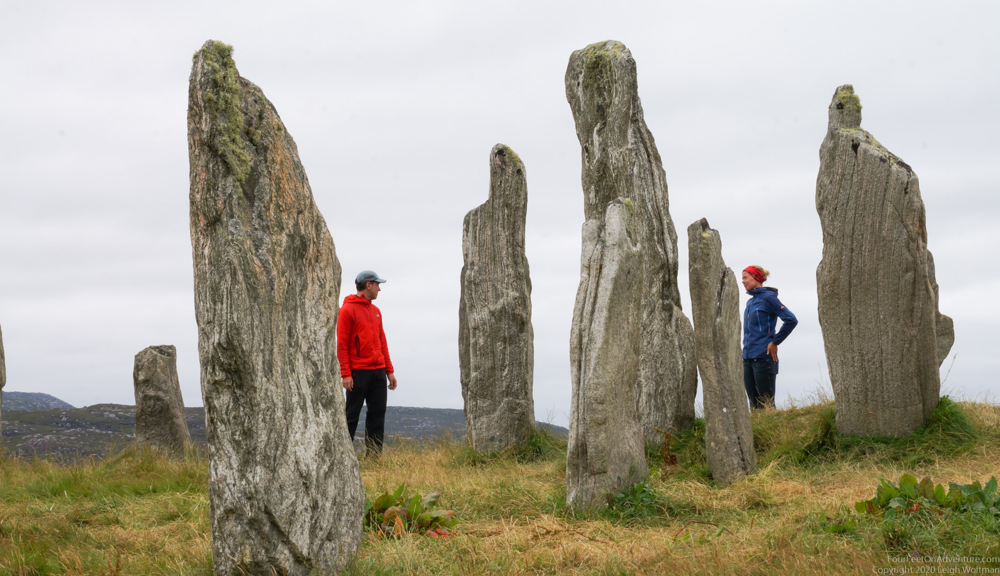
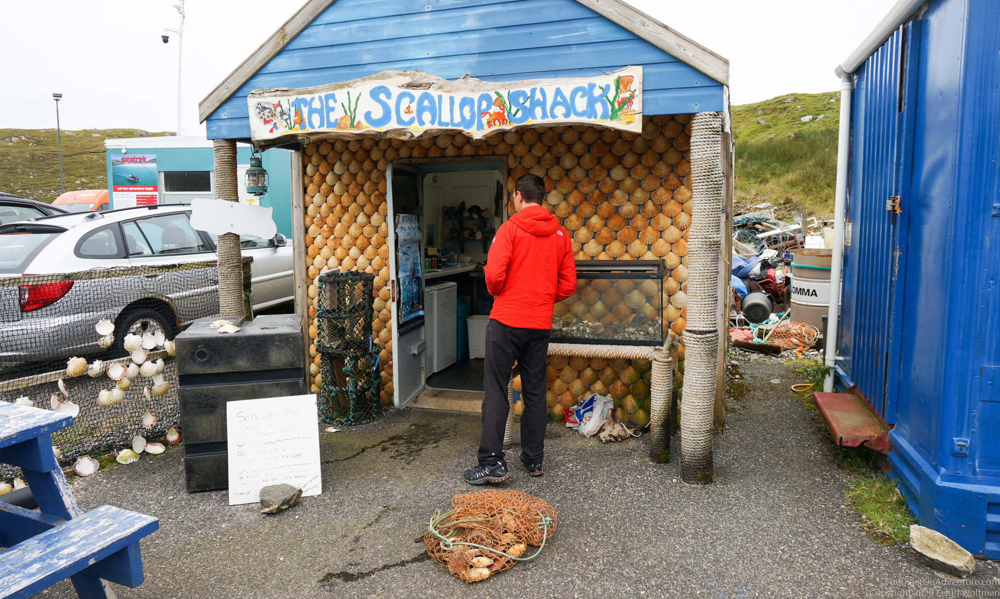
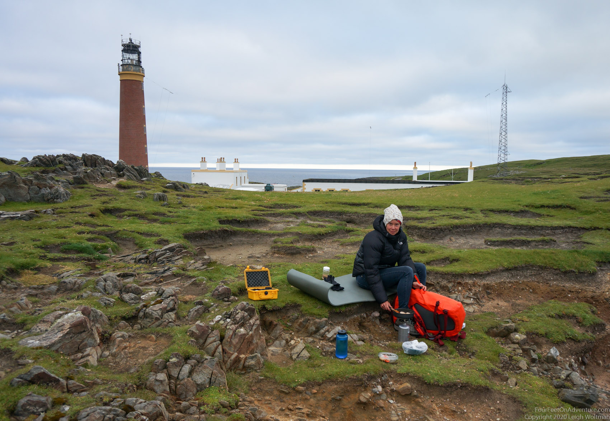
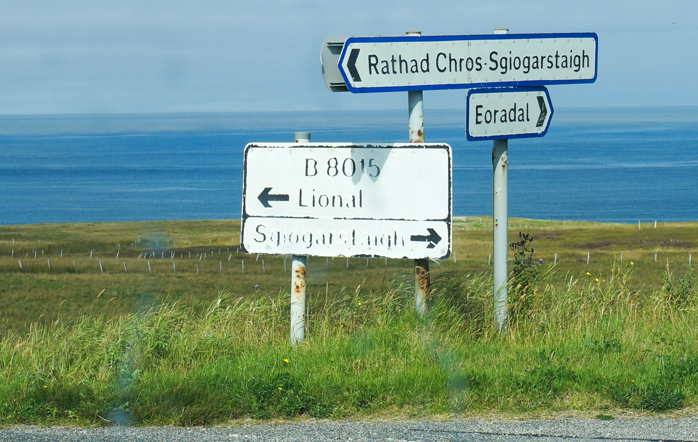
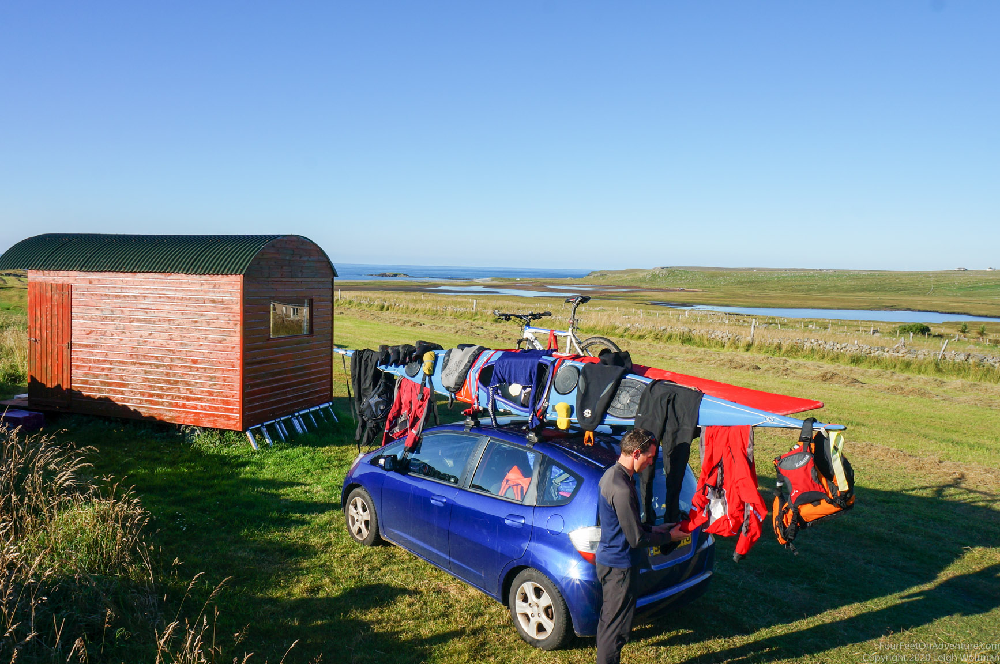
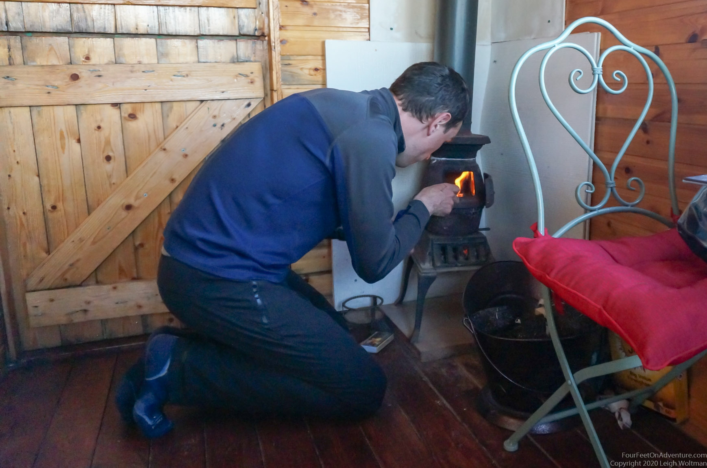

Email Us
Please send us an email, we would love to hear from you!

Our last destination of the trip was coming up, the butt of Lewis. But not without paying a visit to the Calanais standing stones, which were put in place a whopping 5000 years ago, even before Stonehenge. This area has lots of smaller standing stone circles as well, but these were quite tall, and there were so many! Only one had to be put back when this place was reconstructed.

We also found cute little food places on the way. A lot of restaurants and other tourism attractions were still closed, but who could resist this cute scallop shack. Local product guaranteed (new batch to be found just behind Leigh).

On the most northern tip (the butt) of Lewis is a very cute village, Ness, and a Stevenson lighthouse, which we always like to have a look at. We spend the evening sitting under the lighthouse, frying the scallops that we had picked up earlier on the day.
For all the Dutch non-believers who were suffering in a heat wave, we were wearing hats and jackets. Typical Scottish summer wear.

The next day we took a paddle around the lighthouse, we were so lucky with low winds that this was possible, as tidal currents and winds can make this a spooky place to paddle.
Sgiogarstaigh, and the mission to find each other
The plan was as follows, Annette would paddle from port Stoth to the harbor in Sgiogarstaigh, where Leigh would pick her up. Seems simple, right?
Ready to go in port Stoth, we had a last look on the map on Annette’s phone together, making sure we would end up at the same place as phone reception was minimal. Then, Annette set off to explore the coast line and have a beautiful relaxing paddle south, going through arches, around a few islands, and see some nice rock formations. She got stalked by a very big seal for about 15 minutes. Seals usually pop up around the kayak to inspect, then move on to go fishing. Not this guy. He was fat, and his breathing was very noisy. He would follow at about 5 meter behind Annette’s kayak, swimming nose up so his breathing could be heard. Annette looked him in the eye a few times. That tends to make them feel caught, and they disappear to pop up somewhere else later, but not this one. He just kept going. It didn’t really feel threatening, but he was one big seal. Eventually, after going through some undeep passages to the other side of a rock formation, he was gone. A little later, Annette passed by another seal, lying on it’s back in the swell next to rocks. We’ve seen that before in this trip, when it’s nice and sunny weather, they seem to turn on their backs in the water, chin up, and maybe sunbath? They are definitely snoozing, which can lead to a scare and a seal jumping almost out of their skin once they notice you. Annette passed this one at about 3 meters, but it never noticed the kayaker passing by. Which seems odd, as orka’s are around in this area, and they would probably not just pass by. About an hour later, Annette arrived in Sgiogarstaigh.
In the meantime, Leigh had taken some pictures, then was planning to drive to the harbor of Sgiogarstaigh and do some exploring there. When he was trying to look up how to drive there, he made an unwelcome discovery. Annette had his phone in her kayak, as well as her own. Which now left Leigh with no clue where to go. Sgiogarstaigh, which name we looked up for this blog, was also not a name any of us had tried to pronounce or remember, we only knew roughly where on the map to look for a harbour and a village with a long name and lots of letters. So, Leigh found some Swiss tourists checking out the area, and asked if he could have a look on their phone. It being COVID-19 times, the tourists were a bit nervous with the prospect of coming close, but masks were being put on, and Leigh was allowed to come close enough to take a picture of the map on the phone at the end of an outstretched nervous arm. Which, of course, back in the car appeared to have so much glare from the sun that it was unreadable. Leigh decided to give up on a map, and drive south to follow the coast line. There wasn’t just a road following the coast line, he had to drive inland to find such a road. When he finally found a sign with a name that he thought might be what he was looking for, it was for Sgiogarstaigh in 2 different directions. In the end, he spent about an hour trying to find the harbour. He had been there just a couple of minutes when Annette turned up.

We would have eventually found each other as you can’t really get lost there too badly, but lesson learned, always check everyone who needs navigation tools actually has them before splitting up. Visual verification!
Annette also had a run through an area with summer sheiling huts, where people used to take their cattle in the summer for grazing, and check out the peat harvest. With the blooming purple heather and peat blocks that were drying, it was a reminder of how life must have been in the Dutch peat areas years ago. That night we stayed in a little cabin, with a little peat stove, and slept in the smell of a peat fire, just like the Lewis inhabitants must have done in their black houses back in the day. It was the end of our trip, but we can’t wait to be back and explore these isles more!


Please send us an email, we would love to hear from you!